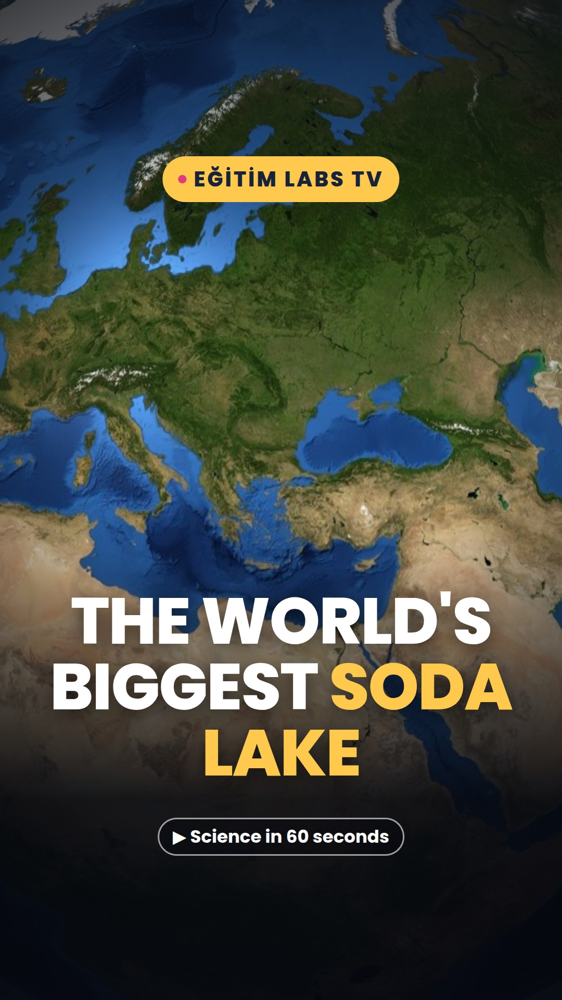

63.33 sn · 9:16 · ses: Gemini Algieba · Türkçe altyazı videoya gömülü
🇹🇷 The world's biggest soda lake is in Türkiye, and it hides 40-metre stone towers built by bacteria. 👇 Dünyanın en büyük sodalı gölü Türkiye'de ve içinde bakterilerin ördüğü 40 metrelik taş kuleler saklıyor. Follow @egitimlabs.official for more · Daha fazlası için takip et #LakeVan #VanGölü #Türkiye #DidYouKnow #Science #EğitimLabsTV
The World's Biggest Soda Lake Is in Türkiye 🇹🇷 #shorts
